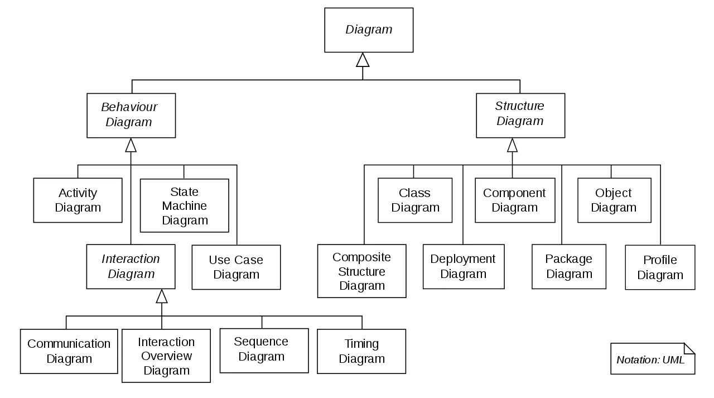

Project UML
Why use a UML diagram?
A picture is worth a thousand words.
UML diagrams provide a visual and standardized way to communicate
ideas and designs to team members, stakeholders, and other people involved in a project. By using a common language and set of conventions,
everyone can understand the system or process being represented in the diagram.
language in the complex world of software development that would also
be understandable for business users and anyone
who wants to
understand a system.
Types of UML Diagrams
There are several types of UML diagrams and each one of them serves a
different purpose
regardless of whether it is being designed before
the implementation or after (as part of documentation).
The two most broad categories that encompass all other types are
Behavioral UML diagram and Structural UML diagram.
As the name
suggests, some UML diagrams try to analyze and depict the structure of
a system or process,
whereas other describe the behavior of the
system, its actors,
and its building components. The different types
are broken down as follows:
